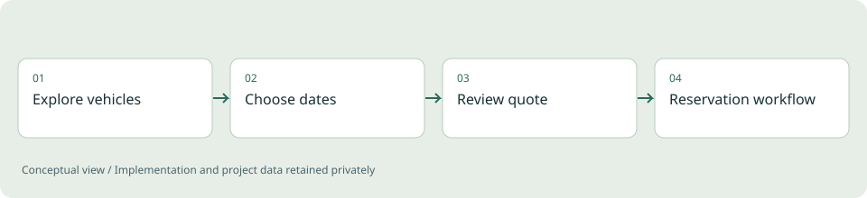

The problem
A booking interface has to explain availability clearly while keeping dates, quotes and reservation states consistent. An attractive page alone does not solve those operational rules.
Project scope
The application brings together server-rendered pages, quote calculation, availability checks and persistent booking records, extended with an owner-facing dashboard, in-app booking messaging with attachments, and integrations for deposit payments and transactional email. Its demo configuration separates the visible experience from real business contacts, payment credentials and customer information.
Engineering decisions
- Model dates and booking states explicitly.
- Include turnaround time in the operational concept of availability.
- Keep business rules separate from the presentation so changes can be reasoned about.
- Separate customer-facing and owner-facing views behind their own authentication checks.
- Treat payment and email providers as replaceable integrations rather than hard-coded services.
Outcome
A complete demonstration of a booking-oriented web application, including the logic behind the customer journey, an owner dashboard for managing reservations, and the messaging and payment integrations a live deployment would need. No revenue or customer-adoption claim is made.
Limits and context
Live operation requires its own integration and concurrency validation, business configuration and deployment checks.